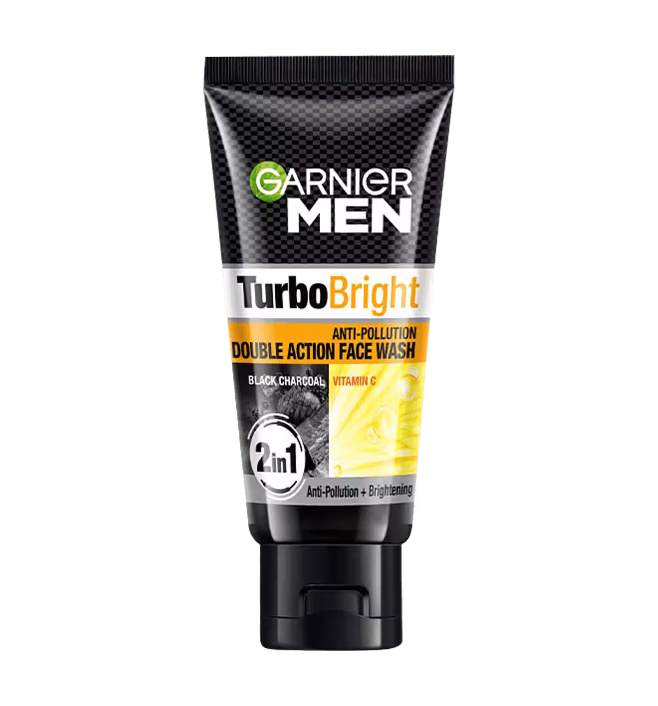

Garnier Face Wash
L'Oréal
Mumbai
G
INGREDIENTS
- Water (Aqua)
- Glycerin
- Myristic Acid
- Palmitic Acid
- Stearic Acid
- Potassium Hydroxide
- Coco-Betaine
- Salicylic Acid (in acne / men variants)
- Vitamin C Derivatives (in brightening variants)
- Plant Extracts (Neem / Lemon / Herbal extracts – variant dependent)
- Fragrance (Parfum)
- Preservatives
- Sodium Benzoate
- Phenoxyethanol
- Colourants (CI dyes – variant dependent)
Safe
- Water (Aqua) – Base solvent
- Glycerin – Humectant, helps retain moisture
- Plant Extracts – Neem / Lemon / Herbal (variant dependent)
- Vitamin C Derivatives – Brightening support (variant dependent)
Mild
- Myristic Acid – Cleansing fatty acid
- Palmitic Acid – Foam and texture enhancer
- Stearic Acid – Thickener and cleanser
- Coco-Betaine – Mild surfactant
- Salicylic Acid – Acne control; may irritate sensitive skin
Unsafe
- Potassium Hydroxide – Strong alkali; can disrupt skin barrier
- Fragrance (Parfum) – Common cause of irritation and sensitivity
- Preservatives
- Phenoxyethanol
- Sodium Benzoate
- Safe in limits but not ideal for sensitive skin
- Artificial Colourants (CI dyes) – No skin benefit
Alternative
- Cetaphil Gentle Cleanser – Non-soap, barrier-friendly
- Simple Face Wash – No fragrance or colour
- Minimalist Cleanser – Low-irritation formula
- Himalaya Gentle Face Wash – Mild herbal option
- Plain Water (Morning) – For dry or sensitive skin